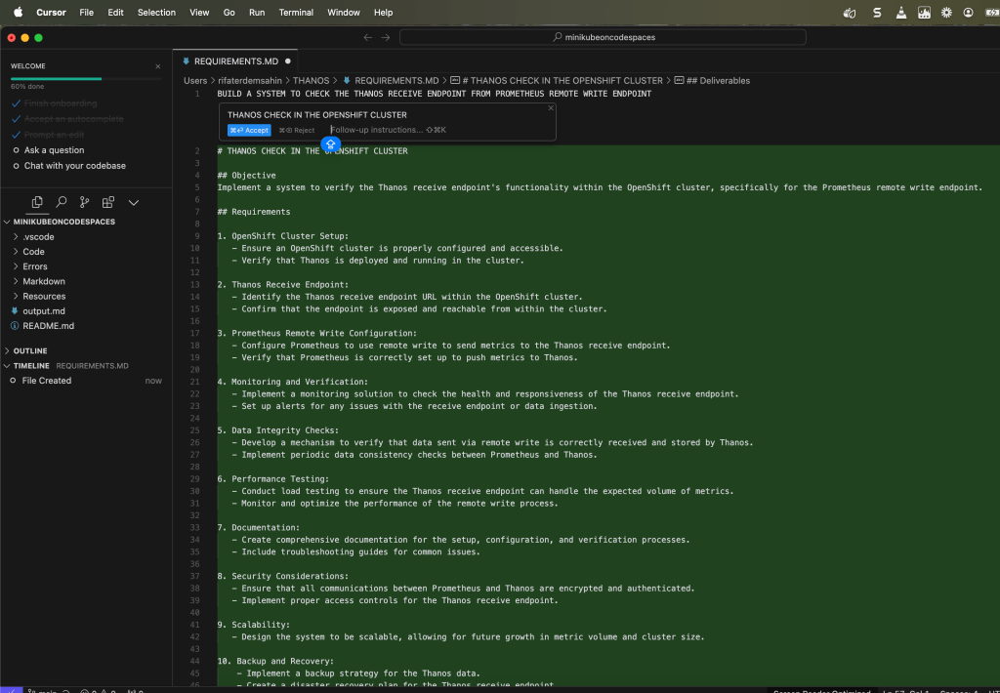
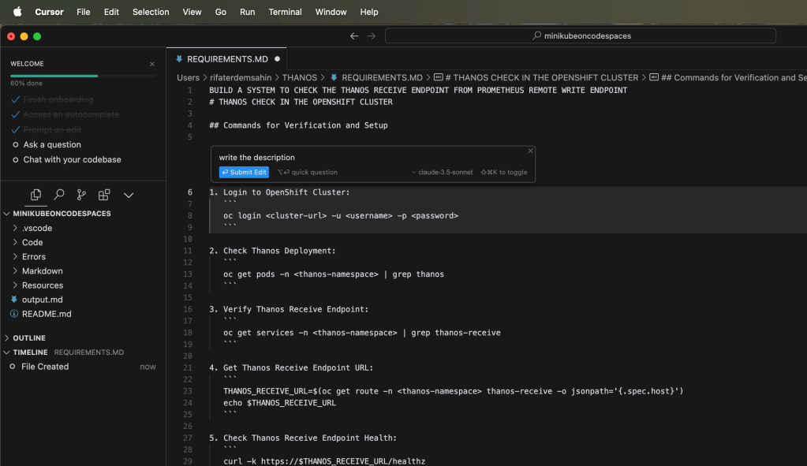
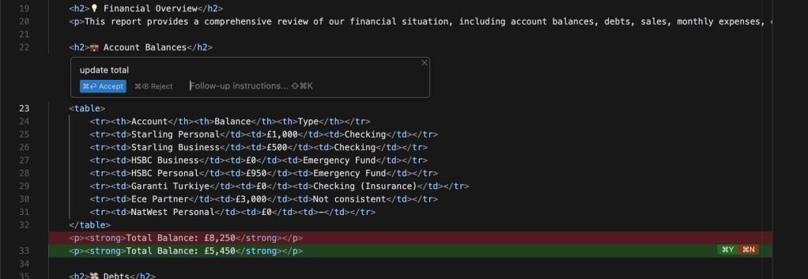
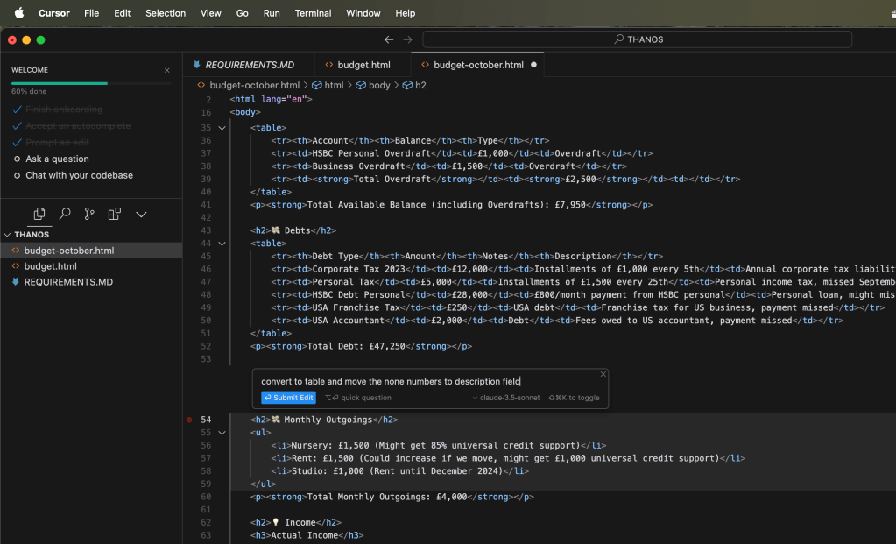

🚀 Cursor AI Testing to Write Code 🧑💻
🚀
In this blog post, I’m going to share my experience with Cursor AI and how it can be leveraged for code writing and testing. Imagine being able to write code more efficiently and debug it faster with the help of AI. That’s exactly what Cursor AI aims to achieve, and I’m putting it to the test!
💡 What I Want to Achieve:
-
Code Generation: Can Cursor AI help me quickly generate functioning code from high-level instructions?
-
Testing: How reliable is Cursor AI in running test cases and ensuring that the code works correctly?
-
Debugging: Will it assist me in identifying bugs and suggesting fixes on the fly?
📝 Step 1: Setting Up the Environment
Before diving into Cursor AI, I first set up my development environment. I’m using GitHub Codespaces integrated with Rancher in Kubernetes, which helps manage my projects across various environments. Now that my workspace is all set, it's time to test the capabilities of Cursor AI.
🚀 Screenshot Pause:
[📸 Screenshot of GitHub Codespaces environment setup with Rancher]
🧑💻 Step 2: Writing Code with Cursor AI
Now, I’ll give Cursor AI a simple task: generate a basic Python function to calculate factorials.
def factorial(n):
if n == 0:
return 1
else:
return n * factorial(n-1)
💡 I provided a high-level instruction: "Create a function that calculates the factorial of a number." And just like that, Cursor AI generated this clean and correct Python code! Now let's put it to the test.
🚀 Step 3: Running Test Cases
After writing the code, it’s time to test whether it works correctly.
assert factorial(5) == 120
assert factorial(0) == 1
Cursor AI helped me create these test cases, and the results? All passed successfully!
🚀 Screenshot Pause:
[📸 Screenshot of test results in Codespaces]
🐞 Step 4: Debugging with Cursor AI
But what if I introduce a bug? I changed the code to mistakenly return n-1 instead of n * factorial(n-1).
def factorial(n):
if n == 0:
return 1
else:
return n - 1 # Intentional bug
The bug was immediately flagged by Cursor AI, suggesting the correct multiplication operation. Pretty impressive! 💪
🏁 Conclusion:
Cursor AI is a powerful tool for developers looking to streamline their coding and debugging processes. It helps generate code based on instructions, tests the code, and even suggests fixes when things go wrong. I’m excited to see how this tool evolves and plan to integrate it more deeply into my workflow.
🚀 Screenshot Pause:

Let me know what you think! Have you tried using AI tools for coding? How did they work for you?

🔗 Connect with me:
-
💼 LinkedIn: https://www.linkedin.com/in/rifaterdemsahin/
-
🐦 Twitter: https://x.com/rifaterdemsahin
-
🎥 YouTube: https://www.youtube.com/@RifatErdemSahin
-
💻 GitHub: https://github.com/rifaterdemsahin
🧑💻 #CursorAI #PythonCoding #AIForDevelopers #TechJourney
not bad the partial parts can be changed
not bad at updating the action

it is using claude and doing the internal action more focused on the mini actions which makes more sense

Imported from rifaterdemsahin.com · 2025